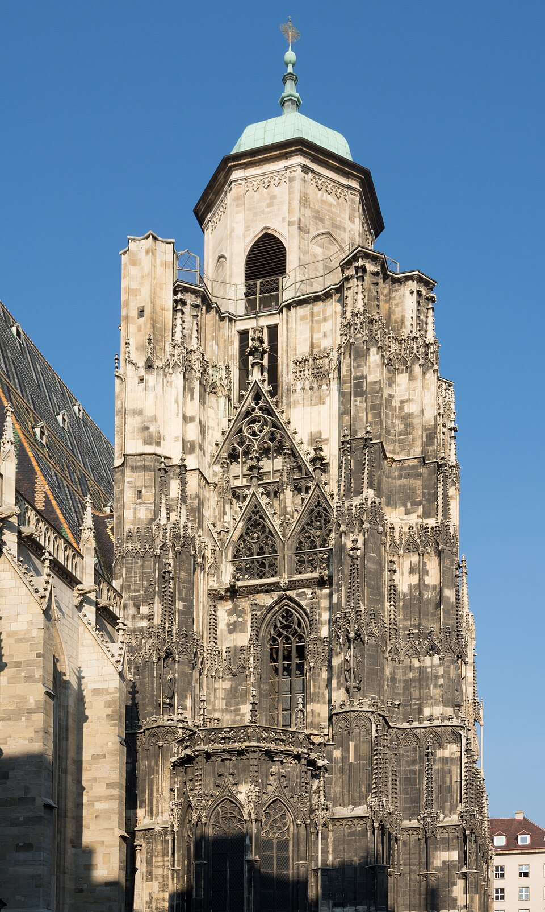

Eva Krenn - 5r
Geografische Fakten
Traumstadt: New York City
Einwohnerzahl: 8,5 Millionen
Top 3 Sehenswürdigkeiten
- Times Square
- Brooklyn Bridge
- Central Park
Kulinarische Spezialitäten
Visueller Eindruck

Stephansdom_Nordturm_01 von
Uoaei1,
CC BY-SA 3.0